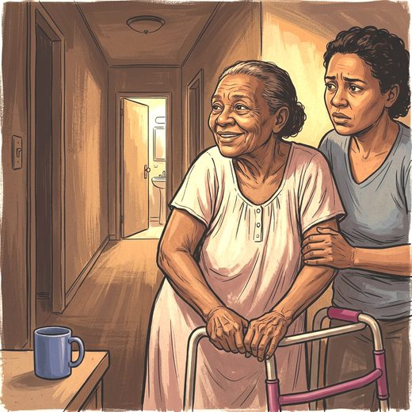

Consulta rápida à beira do leito
Condutas, doses e interações.
Referências da aula · 11
- Fox SH, Katzenschlager R, Lim SY, et al. International Parkinson and Movement Disorder Society evidence-based medicine review: update on treatments for the motor symptoms of Parkinson's disease. Mov Disord. 2018;33(8):1248-66. PMID 29570866. doi:10.1002/mds.27372.PubMedDOI
- Seppi K, Ray Chaudhuri K, Coelho M, et al. Update on treatments for nonmotor symptoms of Parkinson's disease: an evidence-based medicine review. Mov Disord. 2019;34(2):180-98. PMID 30653247. doi:10.1002/mds.27602.PubMedDOI
- Brasil. Ministério da Saúde. Protocolo Clínico e Diretrizes Terapêuticas da Doença de Parkinson. Portaria Conjunta SAES/SECTICS nº 16, de 1º de agosto de 2025.
- 2023 American Geriatrics Society Beers Criteria® Update Expert Panel. American Geriatrics Society 2023 updated AGS Beers Criteria® for potentially inappropriate medication use in older adults. J Am Geriatr Soc. 2023;71(7):2052-81. PMID 37139824. doi:10.1111/jgs.18372.PubMedDOI
- National Institute for Health and Care Excellence. Parkinson's disease in adults (NG71). London: NICE; 2017 (com atualizações).
- Parkinson's UK Excellence Network. Emergency management of patients with Parkinson's. 2023.
- Parkinson's Foundation. Hospital care fact sheet. 2023.
- Turner LN, Gorelick PB. Diagnosis and management of orthostatic hypotension in individuals with Parkinson disease. Practical Neurology. 2025;Sep-Oct (cover focus). Disponível em: practicalneurology.com.
- McEvoy JW, McCarthy CP, Bruno RM, et al. 2024 ESC Guidelines for the management of elevated blood pressure and hypertension. Eur Heart J. 2024;45(38):3912-4018. doi:10.1093/eurheartj/ehae178. PMID 39210715.PubMedDOI
- Montero-Odasso M, van der Velde N, Martin FC, et al. World guidelines for falls prevention and management for older adults: a global initiative. Age Ageing. 2022;51(9):afac205. PMID 36178003. doi:10.1093/ageing/afac205.PubMedDOI
- Wilson JE, Mart MF, Cunningham C, et al. Delirium. Nat Rev Dis Primers. 2020;6(1):90. PMID 33184265. doi:10.1038/s41572-020-00223-4.PubMedDOI
Documentos oficiais
Leis e publicações do Ministério da Saúde sobre o cuidado da pessoa idosa, de acesso livre.
Abrir os documentos